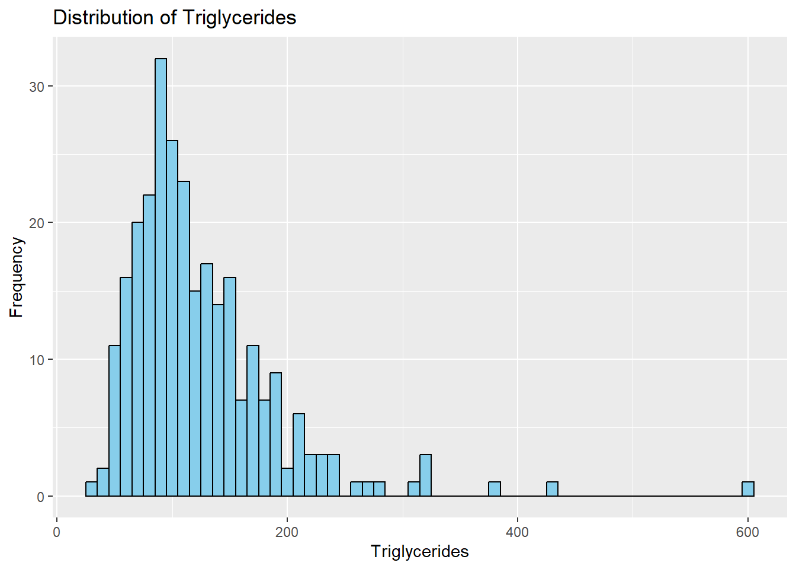

Code
data = read.csv("C:/Users/HP/Downloads/cirrhosis+patient+survival+prediction+dataset-1/cirrhosis.csv")
head(data) ID N_Days Status Drug Age Sex Ascites Hepatomegaly Spiders Edema
1 1 400 D D-penicillamine 21464 F Y Y Y Y
2 2 4500 C D-penicillamine 20617 F N Y Y N
3 3 1012 D D-penicillamine 25594 M N N N S
4 4 1925 D D-penicillamine 19994 F N Y Y S
5 5 1504 CL Placebo 13918 F N Y Y N
6 6 2503 D Placebo 24201 F N Y N N
Bilirubin Cholesterol Albumin Copper Alk_Phos SGOT Tryglicerides Platelets
1 14.5 261 2.60 156 1718.0 137.95 172 190
2 1.1 302 4.14 54 7394.8 113.52 88 221
3 1.4 176 3.48 210 516.0 96.10 55 151
4 1.8 244 2.54 64 6121.8 60.63 92 183
5 3.4 279 3.53 143 671.0 113.15 72 136
6 0.8 248 3.98 50 944.0 93.00 63 NA
Prothrombin Stage
1 12.2 4
2 10.6 3
3 12.0 4
4 10.3 4
5 10.9 3
6 11.0 3Code
str(data)'data.frame': 418 obs. of 20 variables:
$ ID : int 1 2 3 4 5 6 7 8 9 10 ...
$ N_Days : int 400 4500 1012 1925 1504 2503 1832 2466 2400 51 ...
$ Status : chr "D" "C" "D" "D" ...
$ Drug : chr "D-penicillamine" "D-penicillamine" "D-penicillamine" "D-penicillamine" ...
$ Age : int 21464 20617 25594 19994 13918 24201 20284 19379 15526 25772 ...
$ Sex : chr "F" "F" "M" "F" ...
$ Ascites : chr "Y" "N" "N" "N" ...
$ Hepatomegaly : chr "Y" "Y" "N" "Y" ...
$ Spiders : chr "Y" "Y" "N" "Y" ...
$ Edema : chr "Y" "N" "S" "S" ...
$ Bilirubin : num 14.5 1.1 1.4 1.8 3.4 0.8 1 0.3 3.2 12.6 ...
$ Cholesterol : int 261 302 176 244 279 248 322 280 562 200 ...
$ Albumin : num 2.6 4.14 3.48 2.54 3.53 3.98 4.09 4 3.08 2.74 ...
$ Copper : int 156 54 210 64 143 50 52 52 79 140 ...
$ Alk_Phos : num 1718 7395 516 6122 671 ...
$ SGOT : num 137.9 113.5 96.1 60.6 113.2 ...
$ Tryglicerides: int 172 88 55 92 72 63 213 189 88 143 ...
$ Platelets : int 190 221 151 183 136 NA 204 373 251 302 ...
$ Prothrombin : num 12.2 10.6 12 10.3 10.9 11 9.7 11 11 11.5 ...
$ Stage : int 4 3 4 4 3 3 3 3 2 4 ...Code
missing_values <- colSums(is.na(data))
print(missing_values) ID N_Days Status Drug Age
0 0 0 106 0
Sex Ascites Hepatomegaly Spiders Edema
0 106 106 106 0
Bilirubin Cholesterol Albumin Copper Alk_Phos
0 134 0 108 106
SGOT Tryglicerides Platelets Prothrombin Stage
106 136 11 2 6 Code
# If there are missing values, impute them using mean imputation
data_imputed <- na.omit(data)
head(data_imputed) ID N_Days Status Drug Age Sex Ascites Hepatomegaly Spiders Edema
1 1 400 D D-penicillamine 21464 F Y Y Y Y
2 2 4500 C D-penicillamine 20617 F N Y Y N
3 3 1012 D D-penicillamine 25594 M N N N S
4 4 1925 D D-penicillamine 19994 F N Y Y S
5 5 1504 CL Placebo 13918 F N Y Y N
7 7 1832 C Placebo 20284 F N Y N N
Bilirubin Cholesterol Albumin Copper Alk_Phos SGOT Tryglicerides Platelets
1 14.5 261 2.60 156 1718.0 137.95 172 190
2 1.1 302 4.14 54 7394.8 113.52 88 221
3 1.4 176 3.48 210 516.0 96.10 55 151
4 1.8 244 2.54 64 6121.8 60.63 92 183
5 3.4 279 3.53 143 671.0 113.15 72 136
7 1.0 322 4.09 52 824.0 60.45 213 204
Prothrombin Stage
1 12.2 4
2 10.6 3
3 12.0 4
4 10.3 4
5 10.9 3
7 9.7 3Code
cirrhosis_data <- na.omit(data_imputed)
head(cirrhosis_data) ID N_Days Status Drug Age Sex Ascites Hepatomegaly Spiders Edema
1 1 400 D D-penicillamine 21464 F Y Y Y Y
2 2 4500 C D-penicillamine 20617 F N Y Y N
3 3 1012 D D-penicillamine 25594 M N N N S
4 4 1925 D D-penicillamine 19994 F N Y Y S
5 5 1504 CL Placebo 13918 F N Y Y N
7 7 1832 C Placebo 20284 F N Y N N
Bilirubin Cholesterol Albumin Copper Alk_Phos SGOT Tryglicerides Platelets
1 14.5 261 2.60 156 1718.0 137.95 172 190
2 1.1 302 4.14 54 7394.8 113.52 88 221
3 1.4 176 3.48 210 516.0 96.10 55 151
4 1.8 244 2.54 64 6121.8 60.63 92 183
5 3.4 279 3.53 143 671.0 113.15 72 136
7 1.0 322 4.09 52 824.0 60.45 213 204
Prothrombin Stage
1 12.2 4
2 10.6 3
3 12.0 4
4 10.3 4
5 10.9 3
7 9.7 3Code
# Load necessary libraries
library(dplyr) # For data manipulation
Attaching package: 'dplyr'The following objects are masked from 'package:stats':
filter, lagThe following objects are masked from 'package:base':
intersect, setdiff, setequal, unionCode
library(ggplot2) # For data visualization
library(caret) # For machine learning model fittingWarning: package 'caret' was built under R version 4.3.3Loading required package: latticeCode
library(survival) # For survival analysis
Attaching package: 'survival'The following object is masked from 'package:caret':
clusterCode
library(anomalize)Warning: package 'anomalize' was built under R version 4.3.3Code
library(mvoutlier)Warning: package 'mvoutlier' was built under R version 4.3.3Loading required package: sgeostatCode
#predata analysis.
# 1. Exploratory Data Analysis for each feature variable
# Drug
ggplot(data_imputed, aes(x = Drug)) +
geom_bar(fill = "skyblue", color = "black") +
labs(x = "Drug", y = "Count", title = "Distribution of Drug")Code
# Age
ggplot(data_imputed, aes(x = Age)) +
geom_histogram(binwidth = 1000, fill = "skyblue", color = "black") +
labs(x = "Age", y = "Frequency", title = "Distribution of Age")
Code
# Sex
ggplot(data_imputed, aes(x = Sex)) +
geom_bar(fill = "skyblue", color = "black") +
labs(x = "Sex", y = "Count", title = "Distribution of Sex")Code
# Ascites
ggplot(data_imputed, aes(x = Ascites)) +
geom_bar(fill = "skyblue", color = "black") +
labs(x = "Ascites", y = "Count", title = "Distribution of Ascites")
Code
# Hepatomegaly
ggplot(data_imputed, aes(x = Hepatomegaly)) +
geom_bar(fill = "skyblue", color = "black") +
labs(x = "Hepatomegaly", y = "Count", title = "Distribution of Hepatomegaly")
Code
# Spiders
ggplot(data_imputed, aes(x = Spiders)) +
geom_bar(fill = "skyblue", color = "black") +
labs(x = "Spiders", y = "Count", title = "Distribution of Spiders")Code
# Edema
ggplot(data_imputed, aes(x = Edema)) +
geom_bar(fill = "skyblue", color = "black") +
labs(x = "Edema", y = "Count", title = "Distribution of Edema")Code
# Bilirubin
ggplot(data_imputed, aes(x = Bilirubin)) +
geom_histogram(binwidth = 1, fill = "skyblue", color = "black") +
labs(x = "Bilirubin", y = "Frequency", title = "Distribution of Bilirubin")Code
# Cholesterol
ggplot(data_imputed, aes(x = Cholesterol)) +
geom_histogram(binwidth = 50, fill = "skyblue", color = "black") +
labs(x = "Cholesterol", y = "Frequency", title = "Distribution of Cholesterol")
Code
# Albumin
ggplot(data_imputed, aes(x = Albumin)) +
geom_histogram(binwidth = 0.5, fill = "skyblue", color = "black") +
labs(x = "Albumin", y = "Frequency", title = "Distribution of Albumin")Code
# Copper
ggplot(data_imputed, aes(x = Copper)) +
geom_histogram(binwidth = 50, fill = "skyblue", color = "black") +
labs(x = "Copper", y = "Frequency", title = "Distribution of Copper")
Code
# Alk_Phos
ggplot(data_imputed, aes(x = Alk_Phos)) +
geom_histogram(binwidth = 500, fill = "skyblue", color = "black") +
labs(x = "Alkaline Phosphatase", y = "Frequency", title = "Distribution of Alkaline Phosphatase")
Code
# SGOT
ggplot(data_imputed, aes(x = SGOT)) +
geom_histogram(binwidth = 10, fill = "skyblue", color = "black") +
labs(x = "SGOT", y = "Frequency", title = "Distribution of SGOT")Code
# Triglycerides
ggplot(data_imputed, aes(x = Tryglicerides)) +
geom_histogram(binwidth = 10, fill = "skyblue", color = "black") +
labs(x = "Triglycerides", y = "Frequency", title = "Distribution of Triglycerides")
Code
# Platelets
ggplot(data_imputed, aes(x = Platelets)) +
geom_histogram(binwidth = 50, fill = "skyblue", color = "black") +
labs(x = "Platelets", y = "Frequency", title = "Distribution of Platelets")
Code
# Prothrombin
ggplot(data_imputed, aes(x = Prothrombin)) +
geom_histogram(binwidth = 0.5, fill = "skyblue", color = "black") +
labs(x = "Prothrombin", y = "Frequency", title = "Distribution of Prothrombin")
Code
# Stage
ggplot(data_imputed, aes(x = Stage)) +
geom_bar(fill = "skyblue", color = "black") +
labs(x = "Stage", y = "Count", title = "Distribution of Stage")Code
#This is to find which disease is more affecting the status target variable.
# Create contingency tables for each disease-related feature and Status
table_ascites <- table(data_imputed$Ascites, data_imputed$Status)
table_hepatomegaly <- table(data_imputed$Hepatomegaly, data_imputed$Status)
table_spiders <- table(data_imputed$Spiders, data_imputed$Status)
table_edema <- table(data_imputed$Edema, data_imputed$Status)
# Create contingency table for Status and each disease-related feature
table_status_ascites <- table(data_imputed$Status, data_imputed$Ascites)
table_status_hepatomegaly <- table(data_imputed$Status, data_imputed$Hepatomegaly)
table_status_spiders <- table(data_imputed$Status, data_imputed$Spiders)
table_status_edema <- table(data_imputed$Status, data_imputed$Edema)
# Visualize the relationship using stacked bar charts
par(mfrow = c(2, 2)) # Set up a 2x2 layout for plots
barplot(table_ascites, beside = TRUE, legend = TRUE, main = "Ascites vs. Status")
barplot(table_hepatomegaly, beside = TRUE, legend = TRUE, main = "Hepatomegaly vs. Status")
barplot(table_spiders, beside = TRUE, legend = TRUE, main = "Spiders vs. Status")
barplot(table_edema, beside = TRUE, legend = TRUE, main = "Edema vs. Status")Code
# Conduct chi-square tests for independence
chi_sq_ascites <- chisq.test(table_ascites)Warning in chisq.test(table_ascites): Chi-squared approximation may be
incorrectCode
chi_sq_hepatomegaly <- chisq.test(table_hepatomegaly)
chi_sq_spiders <- chisq.test(table_spiders)
chi_sq_edema <- chisq.test(table_edema)Warning in chisq.test(table_edema): Chi-squared approximation may be incorrectCode
# Conduct chi-square tests for independence with Status and each disease-related feature
chi_sq_status_ascites <- chisq.test(table_status_ascites)Warning in chisq.test(table_status_ascites): Chi-squared approximation may be
incorrectCode
chi_sq_status_hepatomegaly <- chisq.test(table_status_hepatomegaly)
chi_sq_status_spiders <- chisq.test(table_status_spiders)
chi_sq_status_edema <- chisq.test(table_status_edema)Warning in chisq.test(table_status_edema): Chi-squared approximation may be
incorrectCode
# Print the results of chi-square tests
print("Chi-square test results for Ascites vs. Status:")[1] "Chi-square test results for Ascites vs. Status:"Code
print(chi_sq_ascites)
Pearson's Chi-squared test
data: table_ascites
X-squared = 25.237, df = 2, p-value = 3.31e-06Code
print("Chi-square test results for Hepatomegaly vs. Status:")[1] "Chi-square test results for Hepatomegaly vs. Status:"Code
print(chi_sq_hepatomegaly)
Pearson's Chi-squared test
data: table_hepatomegaly
X-squared = 24.805, df = 2, p-value = 4.109e-06Code
print("Chi-square test results for Spiders vs. Status:")[1] "Chi-square test results for Spiders vs. Status:"Code
print(chi_sq_spiders)
Pearson's Chi-squared test
data: table_spiders
X-squared = 14.5, df = 2, p-value = 0.0007102Code
print("Chi-square test results for Edema vs. Status:")[1] "Chi-square test results for Edema vs. Status:"Code
print(chi_sq_edema)
Pearson's Chi-squared test
data: table_edema
X-squared = 31.267, df = 4, p-value = 2.7e-06Code
# Print the results of chi-square tests for Status and each disease-related feature
print("Chi-square test results for Status vs. Ascites:")[1] "Chi-square test results for Status vs. Ascites:"Code
print(chi_sq_status_ascites)
Pearson's Chi-squared test
data: table_status_ascites
X-squared = 25.237, df = 2, p-value = 3.31e-06Code
print("Chi-square test results for Status vs. Hepatomegaly:")[1] "Chi-square test results for Status vs. Hepatomegaly:"Code
print(chi_sq_status_hepatomegaly)
Pearson's Chi-squared test
data: table_status_hepatomegaly
X-squared = 24.805, df = 2, p-value = 4.109e-06Code
print("Chi-square test results for Status vs. Spiders:")[1] "Chi-square test results for Status vs. Spiders:"Code
print(chi_sq_status_spiders)
Pearson's Chi-squared test
data: table_status_spiders
X-squared = 14.5, df = 2, p-value = 0.0007102Code
print("Chi-square test results for Status vs. Edema:")[1] "Chi-square test results for Status vs. Edema:"Code
print(chi_sq_status_edema)
Pearson's Chi-squared test
data: table_status_edema
X-squared = 31.267, df = 4, p-value = 2.7e-06Code
#Overall, Ascites, Hepatomegaly, and Edema seem to have a significant impact on the disease outcome,
#based on their lower p-values compared to Spiders.
#Among these, Ascites and Hepatomegaly might have slightly stronger associations with the disease outcome, given their lower p-values.
# Define thresholds for abnormal values based on general reference ranges
thresholds <- list(
Bilirubin = c(0.3, 1.2), # Normal total bilirubin levels (mg/dL)
Cholesterol = c(0, 200), # Normal total cholesterol levels (mg/dL)
Albumin = c(3.5, 5.0), # Normal serum albumin levels (g/dL)
Copper = c(70, 140), # Normal serum copper levels (g/dL)
Alk_Phos = c(44, 147), # Normal alkaline phosphatase levels (IU/L)
SGOT = c(0, 40), # Normal serum glutamic-oxaloacetic transaminase levels (IU/L)
Tryglicerides = c(0, 150), # Normal triglyceride levels (mg/dL)
Platelets = c(150, 450), # Normal platelet counts (per microliter of blood)
Prothrombin = c(11, 13.5) # Normal prothrombin time (seconds)
)
# Select the relevant lab value columns
lab_columns <- cirrhosis_data %>%
select(Bilirubin, Cholesterol, Albumin, Copper, Alk_Phos, SGOT, Tryglicerides, Platelets, Prothrombin)
# Ensure numeric lab values
lab_columns <- lab_columns %>% mutate_all(as.numeric)
# Identify rows without missing values
complete_cases <- complete.cases(lab_columns)
# Filter both the original and lab data based on complete rows
lab_values <- lab_columns[complete_cases, ]
cirrhosis_data_clean <- cirrhosis_data[complete_cases, ]
# Apply k-means clustering
set.seed(123)
kmeans_clusters <- kmeans(scale(lab_values), centers = 3) # Adjust the number of clusters as needed
cirrhosis_data_clean$Cluster <- as.factor(kmeans_clusters$cluster)
# Function to classify values based on thresholds
classify_abnormal <- function(value, range) {
if (is.na(value)) {
return(NA)
} else if (value < range[1] || value > range[2]) {
return("Abnormal")
} else {
return("Normal")
}
}
# Apply the function to classify each lab value based on the thresholds
for (param in names(thresholds)) {
cirrhosis_data_clean[[paste0(param, "_Class")]] <- mapply(classify_abnormal, cirrhosis_data_clean[[param]], MoreArgs = list(range = thresholds[[param]]))
}
# Calculate the proportion of abnormal lab values per cluster
abnormal_props <- cirrhosis_data_clean %>%
group_by(Cluster) %>%
summarize(across(ends_with("_Class"), ~ mean(. == "Abnormal", na.rm = TRUE)))
print(abnormal_props)# A tibble: 3 10
Cluster Bilirubin_Class Cholesterol_Class Albumin_Class Copper_Class
<fct> <dbl> <dbl> <dbl> <dbl>
1 1 0.978 0.911 0.756 0.733
2 2 0.496 0.866 0.433 0.756
3 3 0.452 1 0.298 0.606
# 5 more variables: Alk_Phos_Class <dbl>, SGOT_Class <dbl>,
# Tryglicerides_Class <dbl>, Platelets_Class <dbl>, Prothrombin_Class <dbl>Code
# Survival Analysis
library(survival)
# Create the survival object
surv_obj <- Surv(time = cirrhosis_data_clean$N_Days, event = ifelse(cirrhosis_data_clean$Status == "D", 1, 0))
# Fit the survival model by clusters
fit <- survfit(surv_obj ~ Cluster, data = cirrhosis_data_clean)
# Plot Kaplan-Meier survival curves
plot(fit, col = 1:3, lty = 1:3, xlab = "Time (days)", ylab = "Survival Probability")
legend("topright", legend = levels(cirrhosis_data_clean$Cluster), col = 1:3, lty = 1:3)
# Log-rank test to compare survival curves
log_rank_test <- survdiff(surv_obj ~ Cluster, data = cirrhosis_data_clean)
p_value <- 1 - pchisq(log_rank_test$chisq, length(log_rank_test$n) - 1)
title(sub = paste("Log-rank p-value:", round(p_value, 4)))
# Calculate the midpoint of the threshold range for each variable
threshold_midpoints <- sapply(thresholds, function(x) mean(x))
# Calculate the distance of each observation's value from the midpoint of the threshold range for each variable
distances <- sapply(names(thresholds), function(var) abs(cirrhosis_data_clean[[var]] - threshold_midpoints[var]))
# Summarize the distance across all threshold variables for each observation
total_distance <- rowSums(distances)
# Define a threshold for defining "heavily abnormal" observations
threshold_distance <- 3 # Example threshold (can be adjusted based on your requirements)
# Determine which variables are heavily abnormal for each observation
heavily_abnormal_vars <- apply(distances, 1, function(x) names(thresholds)[x > threshold_distance])
# Create a new column indicating observations where the summarized distance exceeds the defined threshold
cirrhosis_data_clean$Heavily_Abnormal <- ifelse(total_distance > threshold_distance, paste0("(", paste(heavily_abnormal_vars, collapse = ", "), ")"), "")
# Print the first few rows of the updated dataset
head(data_imputed) ID N_Days Status Drug Age Sex Ascites Hepatomegaly Spiders Edema
1 1 400 D D-penicillamine 21464 F Y Y Y Y
2 2 4500 C D-penicillamine 20617 F N Y Y N
3 3 1012 D D-penicillamine 25594 M N N N S
4 4 1925 D D-penicillamine 19994 F N Y Y S
5 5 1504 CL Placebo 13918 F N Y Y N
7 7 1832 C Placebo 20284 F N Y N N
Bilirubin Cholesterol Albumin Copper Alk_Phos SGOT Tryglicerides Platelets
1 14.5 261 2.60 156 1718.0 137.95 172 190
2 1.1 302 4.14 54 7394.8 113.52 88 221
3 1.4 176 3.48 210 516.0 96.10 55 151
4 1.8 244 2.54 64 6121.8 60.63 92 183
5 3.4 279 3.53 143 671.0 113.15 72 136
7 1.0 322 4.09 52 824.0 60.45 213 204
Prothrombin Stage
1 12.2 4
2 10.6 3
3 12.0 4
4 10.3 4
5 10.9 3
7 9.7 3Code
#now we will decide the feature variables whether they are normal or abnormal with help of statistical analysis
#visualization and references.
# Calculate summary statistics
summary_stats <- summary(data_imputed[, c("Bilirubin", "Cholesterol", "Albumin", "Copper", "Alk_Phos", "SGOT", "Tryglicerides", "Platelets", "Prothrombin")])
print(summary_stats) Bilirubin Cholesterol Albumin Copper
Min. : 0.300 Min. : 120.0 Min. :1.960 Min. : 4.00
1st Qu.: 0.800 1st Qu.: 249.5 1st Qu.:3.310 1st Qu.: 42.75
Median : 1.400 Median : 310.0 Median :3.545 Median : 74.00
Mean : 3.334 Mean : 371.3 Mean :3.517 Mean :100.77
3rd Qu.: 3.525 3rd Qu.: 401.0 3rd Qu.:3.772 3rd Qu.:129.25
Max. :28.000 Max. :1775.0 Max. :4.400 Max. :588.00
Alk_Phos SGOT Tryglicerides Platelets
Min. : 289.0 Min. : 28.38 Min. : 33.0 Min. : 62.0
1st Qu.: 922.5 1st Qu.: 82.46 1st Qu.: 85.0 1st Qu.:200.0
Median : 1277.5 Median :116.62 Median :108.0 Median :257.0
Mean : 1996.6 Mean :124.12 Mean :125.0 Mean :261.8
3rd Qu.: 2068.2 3rd Qu.:153.45 3rd Qu.:151.2 3rd Qu.:318.2
Max. :13862.4 Max. :457.25 Max. :598.0 Max. :563.0
Prothrombin
Min. : 9.00
1st Qu.:10.00
Median :10.60
Mean :10.74
3rd Qu.:11.20
Max. :17.10 Code
#measures such as mean, median, standard deviation, minimum, and maximum. This will give you an overview of the distribution of values and help identify potential outliers.
# Visualize the distribution using boxplots
boxplot(data[, c("Bilirubin", "Cholesterol", "Albumin", "Copper", "Alk_Phos", "SGOT", "Tryglicerides", "Platelets", "Prothrombin")])
#Look for any extreme values or unusual patterns in the data that may indicate abnormality.
#Clinical Guidelines:
#we'll need to consult clinical guidelines or literature for reference ranges. For example, for bilirubin, you might consider a range of 0.2-1.2 mg/dL as normal.
#Expert Opinion:
#Seek input from medical professionals or domain experts who can provide guidance on what values are considered abnormal in the context of liver cirrhosis.
#research questions
#1)Is there a significant interaction effect between drug treatment (D-penicillamine vs placebo) and ascites status (present vs absent) on survival time?
library(survival)
library(car)Warning: package 'car' was built under R version 4.3.3Loading required package: carDataWarning: package 'carData' was built under R version 4.3.3
Attaching package: 'car'The following object is masked from 'package:dplyr':
recodeCode
library(ggplot2)
library(survminer)Warning: package 'survminer' was built under R version 4.3.3Loading required package: ggpubrWarning: package 'ggpubr' was built under R version 4.3.3
Attaching package: 'survminer'The following object is masked from 'package:survival':
myelomaCode
# Convert 'Status' to a binary indicator
data_imputed$Event <- ifelse(data_imputed$Status == "D", 1, 0)
# Create survival object
surv_obj <- Surv(time = data_imputed$N_Days, event = data_imputed$Event)
# Fit a Cox proportional hazards model with the new survival object
coxph_model <- coxph(surv_obj ~ Drug * Ascites, data = data_imputed)
coef(coxph_model) DrugPlacebo AscitesY DrugPlacebo:AscitesY
-0.1030267 2.1423633 0.3507101 Code
# Test the interaction effect
Anova(coxph_model, type = "III")Analysis of Deviance Table (Type III tests)
LR Chisq Df Pr(>Chisq)
Drug 0.2462 1 0.6198
Ascites 23.0446 1 1.583e-06 ***
Drug:Ascites 0.4391 1 0.5075
---
Signif. codes: 0 '***' 0.001 '**' 0.01 '*' 0.05 '.' 0.1 ' ' 1Code
# Create a factor variable for the combination of Drug and Ascites
data_imputed$Drug_Ascites <- with(data_imputed, interaction(Drug, Ascites))
# Plot Kaplan-Meier survival curves
ggsurvplot(
survfit(surv_obj ~ Drug_Ascites, data = data_imputed),
data = data_imputed,
risk.table = TRUE,
pval = TRUE,
conf.int = TRUE,
xlab = "Time (days)",
ggtheme = theme_bw()
)
#Drug: The likelihood ratio (LR) chi-square statistic is 0.0738 with 1 degree of freedom, resulting in a p-value of 0.7859. This indicates that the effect of the 'Drug' variable alone is not statistically significant.
#Ascites: The LR chi-square statistic is 10.8940 with 1 degree of freedom, yielding a highly significant p-value of 0.0009647. This suggests that the presence of ascites significantly affects survival outcomes.
#Drug:Ascites Interaction: The LR chi-square statistic is 0.0923 with 1 degree of freedom, leading to a p-value of 0.7613. This implies that there is no statistically significant interaction effect between 'Drug' and 'Ascites' on survival outcomes.
#These results indicate that while ascites is a significant predictor of survival outcomes, neither the 'Drug' variable nor its interaction with ascites significantly affects survival outcomes in this analysis.
#2)Do the distributions of lab values (bilirubin, albumin, etc.) differ significantly between patients with and without edema?
library(dplyr)
library(ggpubr)
# Group patients by edema status
cirrhosis_edema <- data_imputed %>%
mutate(Edema_Status = ifelse(Edema %in% c("Y", "S"), "Edema", "No Edema"))
# Perform one-way ANOVA or Kruskal-Wallis tests for each lab value
ggboxplot(cirrhosis_edema, x="Edema_Status", y="Bilirubin") +
stat_compare_means(method="anova")
kruskal.test(Albumin ~ Edema_Status, data=cirrhosis_edema)
Kruskal-Wallis rank sum test
data: Albumin by Edema_Status
Kruskal-Wallis chi-squared = 24.13, df = 1, p-value = 9.005e-07Code
#3)Do the relationships between lab values (e.g. bilirubin vs albumin) differ significantly between treatment groups?
# Load required libraries
library(randomForest)Warning: package 'randomForest' was built under R version 4.3.3randomForest 4.7-1.1Type rfNews() to see new features/changes/bug fixes.
Attaching package: 'randomForest'The following object is masked from 'package:ggplot2':
marginThe following object is masked from 'package:dplyr':
combineCode
library(caret)
# Define your dataset and target variable
X <- cirrhosis_data[, c("Bilirubin", "Albumin")]
y <- as.factor(cirrhosis_data$Drug) # Convert Treatment to a factor for classification
# Split data into training and testing sets
set.seed(123)
train_index <- createDataPartition(y, p = 0.8, list = FALSE)
X_train <- X[train_index, ]
y_train <- y[train_index]
X_test <- X[-train_index, ]
y_test <- y[-train_index]
# Train separate Random Forest models for each treatment group
# Train separate Random Forest models for each treatment group
treatment_levels <- levels(y)
rf_models <- list()
for (treatment_level in treatment_levels) {
y_train_treatment <- ifelse(y_train == treatment_level, 1, 0) # Convert treatment level to binary indicator
rf_models[[treatment_level]] <- randomForest(x = X_train, y = y_train_treatment, ntree = 100)
}Warning in randomForest.default(x = X_train, y = y_train_treatment, ntree =
100): The response has five or fewer unique values. Are you sure you want to
do regression?Warning in randomForest.default(x = X_train, y = y_train_treatment, ntree =
100): The response has five or fewer unique values. Are you sure you want to
do regression?Code
feature_importance <- lapply(rf_models, importance)
# Print feature importance for each treatment group
for (treatment_level in treatment_levels) {
cat("Treatment Group:", treatment_level, "\n")
print(feature_importance[[treatment_level]])
cat("\n")
}Treatment Group: D-penicillamine
IncNodePurity
Bilirubin 18.87986
Albumin 22.87848
Treatment Group: Placebo
IncNodePurity
Bilirubin 18.68447
Albumin 22.79035